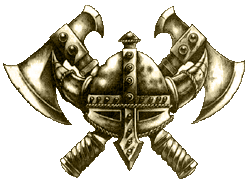

|
Warhammer
Fantasy
Warhammer Fantasy Battle és
Mordheim.
Az oldalon fent lévõ
Warhammer Fantasy Battle anyagok mind az 5. kiadású
szabályrendszerhez vannak!
| Ork
taktikák - Jótanácsok
és észrevételek a zöldbõrûekkel
való játékhoz Fantasy Battle-ben..
Goblin
halálugró katapult -
Ezen "érdekes"
szerkezet teljes leírása, a rá
vonatkozó speciális szabályokkal
egyetemben.
Karak
azgal tárnái - Egy
kiegészítõ szabály, mely a játékot
hivatott színesebbé tenni, néhány váratlanul
elõugró éjgobbó személyében.
|
 |
Éjgoblin
hálóvetõk - A
hálóvetõ osztagok ismertetése és a
rájuk vonatkozó speciális szabályok.
Goblin
Squiglovasok és Squigpásztorok -
Minden, amit tudni kell róluk:
leírás, történet, speciális
szabályok.
Erdei
Goblinok -
Egy leírás, mely tartalmazza a fõbb
ismérveiket és a rájuk vonatkozó speciális
szabályokat.
Az
Orkokra és seregeikre vonatkozó speciális szabályok
- Ezek ismerete elengedhetetlen a velük
való játékhoz.
Jó csemegézést! - Rincewind
|